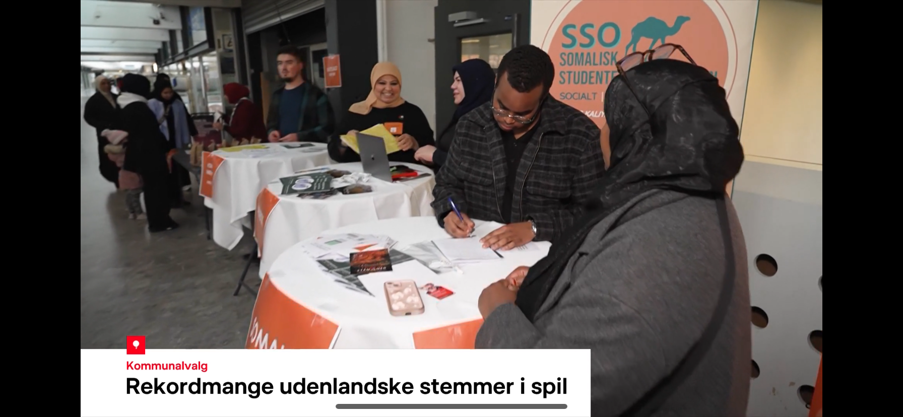
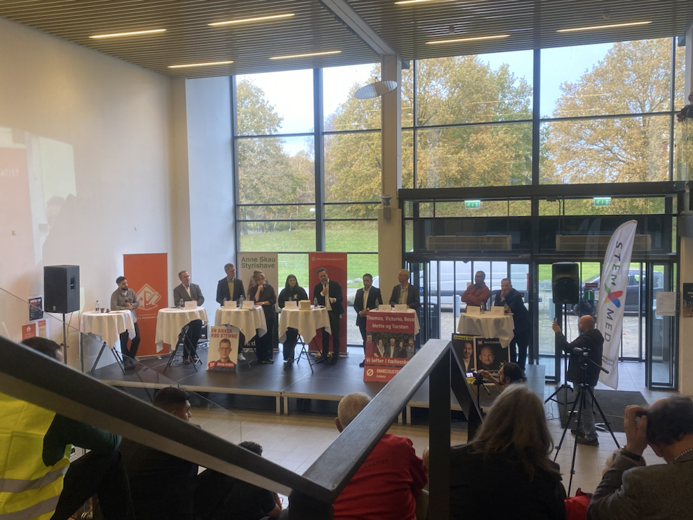

Election information day
About the event
I joined the election event with Somalisk Studenterorganisation (SSO), where I am vice president in Odense. SSO has roots in the Somali student community and welcomes students from different backgrounds. It gives students a place to meet, support one another, and build friendships and networks through events. SSO is active in Copenhagen, Aarhus, and Odense and has more than 300 members. You can learn more on SSO's Instagram page.
Twelve local organizations in Odense worked together to make information about the 2025 municipal election easier to access.
The event invited residents to meet local politicians, ask questions, and get help understanding how to vote. Interpreters in Somali, Turkish, and Arabic were planned, along with activities for children.
National broadcaster DR and other media were there to report on the event. I appeared in DR's coverage at the information table.
It took place at Vollsmose Torv in Odense on 1 November 2025. By taking part, I developed teamwork and public communication skills and learned how to help make information easier for more people to understand.
Photos from the event

